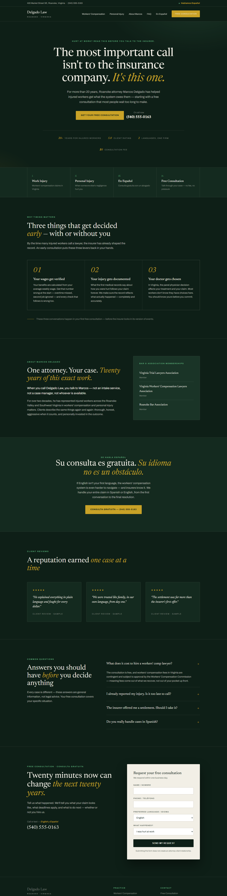

A homepage concept for a fictional solo work-injury attorney, demonstrating a second, deliberately different design system: dark, atmospheric, and built to turn a firm's philosophy into the page's actual structure.
Delgado Law (fictional): a solo attorney with twenty years representing injured workers, serving clients in English and Spanish. His core advice to every client — call before the insurer shapes the record, because wages, documentation, and doctor choice get decided early — is exactly the kind of substance that usually dies as a paragraph of body text.
The challenge given to the design: turn that advice into the site's architecture, make bilingual service a first-class feature rather than a banner line, and build trust for a solo practice competing against heavily-advertised firms.

The full homepage concept: an evergreen editorial system with a "why timing matters" narrative, a dedicated Spanish-language section, and proof arranged to be believed.
The attorney's "call early" philosophy becomes the headline ("The most important call isn't to the insurance company") and a three-step numbered section on wages, documentation, and doctor choice. The firm's thinking becomes the page's structure.
A dedicated Spanish-language section with its own headline, a topbar chip, bilingual form labels, and a navigation entry — because for the clients who need it, it's the deciding factor.
Where most injury firms shout in red and gold, this system is quiet: deep evergreen ground, brass accents, ivory serif headlines. In a category full of noise, calm reads as confidence.
A stat strip under the hero, credential panel, review cards, and a no-JavaScript FAQ that answers the questions people actually hesitate over — cost, timing, settlements — before they call.